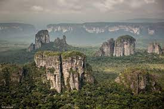
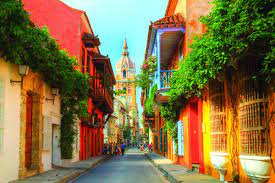
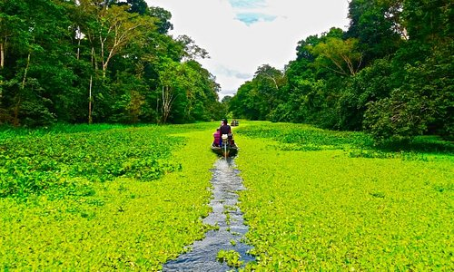
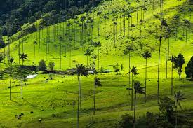
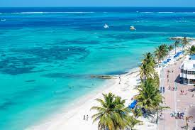
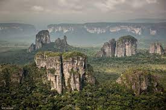
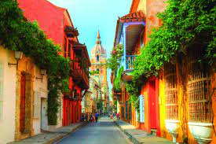
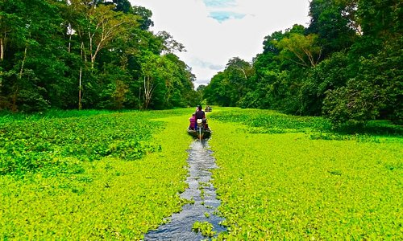
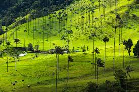
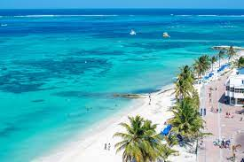

THE CHARM OF THIS LAND TAKES YOU TO THE MOST AMAZING DESTINATIONS

LOCATION
The most welcoming place on Earth is ready to greet you with a beaming smile, a hot cup of coffee and the boundless warmth of its people, giving you the most memorable of experiences.
Colombia is a topographically diverse country, where you’ll find mountainous regions, stretching plains, mysterious rainforests and—obviously—stunning, world-famous beaches. And just like its geography, its people are varied and charming. Colombians will always greet you with a smile on their face, are more than willing to help out anyone who might need it, and will no doubt share with you that joy they carry within them, making you feel right at home in the most welcoming place on Earth.
Each region has unique characteristics that its inhabitants often reflect through their personality and outlook on life, the one thing that remains the same is their kindness and warmth. Join us for a brief tour of Colombia’s 6 tourism regions and the people that’ll welcome you in each one of them.
;
Places to Visit
 










Things to do
Beautiful Tayrona National Park—one of the most magical places on the Caribbean Coast of Colombia. This natural heaven is home to dense jungle, luscious walking paths, beautiful beaches, and fascinating wildlife. Hike over boulders and cross small bridges, ending up at white beaches with crystal clear water where you can swim and drink fresh coconuts that have been picked from the palms. Best of all, the option to sleep in a hammock under the stars makes it a true bucket-list experience. Enjoy all the best things to do in Tayrona National Park!
Discover the beauty of Cartagena Old Town, where colorful houses sit under vibrant flags blowing in the breeze. The atmosphere here is wonderful; watch the street artists or buy fruit from the traditional vendors in their brightly colored clothing. As you wander the meandering streets, you’ll find endless historical buildings and ancient churches. In fact, you could even think you’re in a European city! Tip: We recommend joining an Old Town tour to explore with the help of a local, insightful guide.
Home to the tallest palm trees in the world, Cocora Valley is an absolute top thing to do in Colombia! This painting-like landscape allows visitors to hike beautiful trails, ride on horseback through open valleys, or go off-road by jeep under the towering palms. Start in the neighboring town of Salento and hop in a Willy (an old-fashioned jeep) that will take you to the valley. From here, you can choose to do the short or long hike, both of which take you among the 60-meter-high palm trees and the mist from the cloud forest. You also have the option to visit the Acaime Hummingbird sanctuary for a small extra fee. Here are all your hotel options in Cocora Valley.
Welcome to remarkable Guatape, one of the best day trips from Medellin and a top things to do in luscious Colombia. This colorful village is worth visiting in itself, but its true claim to fame is the mammoth rock that sits just outside the village, towering over the surrounding lakes.
On the edge of the stunning Cocora Valley, discover the colorful highland town of Salento. The town is a popular stop off on a Colombia itinerary, and for good reason; the rainbow village has cute shops and beautiful viewpoints and is at the center of Colombia’s coffee region.